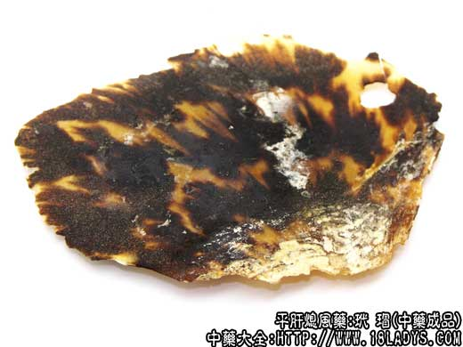
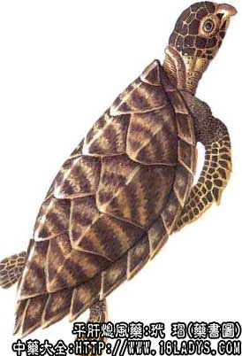

玳瑁为较少常用中药。始载《开宝本草》，原名“瑇瑁”。
别名：明玳瑁。
来源：为海龟科水栖爬行动物玳瑁的背部的鳞片甲片，野生于海洋中。
产地：主产于温热带海洋中，我国台湾、福建、广东等省有产。
性状鉴别：本品呈薄板片状，性状不一，长10～25厘米，厚1～3毫米，边缘薄，中部稍厚，有褐色与琥珀黄色交错的花斑及形纹。表面平滑有光泽，呈半透明状。质坚韧，不易折断，断面角质，对光照视有紧密透明细点。气无，味淡，以片大而厚，有光泽，半透明者为佳。
主要成分：含角蛋白及胶质等。
药理作用：潜阳熄风，清热解毒，有镇静、清热作用。
炮制：切碎块，滑石粉炒至鼓起质酥时研细粉用，或生用。
性味：甘，寒。
归经：入心、肝经。
功能：潜阳熄风，清热解毒，定惊。
主治：热病发狂，小儿惊风，痈肿疮毒等症。
临床应用：
（1）用于治热病所致神昏、谵语、惊厥、作用类似犀角、羚羊角，有凉血清热解毒作用，常配其它清热解毒和芳香开窍药同用，方如至宝丹。
（2）用于治血虚眩晕、阴虚烦热、不眠，配龟板、牡蛎、生地、白芍等。
（3）外用解痘毒和治药物过敏引起的皮疹。瘙痒难忍者尤宜用之，可用冷开水磨玳瑁局部外涂，有透热止痒作用，也可配清热药内服。
用量：9～15g，入丸散剂，也可用冷开水磨汁饮服，或研末冲服。
处方举例：至宝丹：成药，见麝香项下。
注：海龟的鳞甲，灰黄白色，带黑色斑点，无云层纹，质软，甲薄，应注意区分。
炮制：黄酒拌后蒸6～8小时。